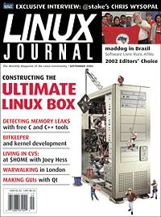

Shutdown Archive web server
Search:
Linux Journal
Issue #101/September 2002

Features
What Has 1.1 Terabytes, 9,503 BogoMips and Flies?
by Don Marti
With a collection of hot hardware, Mr. Marti shows that you can't judge a box by its color.
Indepth
Coding between Mouse and Keyboard, Part I
by Patricia Jung
In the first part of this two-part article, Jung provides a working example of building GUI apps with Qt.
Bring an Atomic Clock to Your Home with Chrony
by Fred Mora
Be the first on your block to have atomic clock accuracly on your desktop!
CVS homedir
by Joey Hess
Ever thought of living your life in CVS? Hess shows how.
Linux Multimedia with Pd and GEM: a User's Report
by Dave Phillips
Phillips reveals how the Pd sound synthesis and processing environment works to make Linux a viable multimedia platform.
Free Software in Brazil
by Jon Hall
maddog gives the lowdown on some impressive Brazilian free software projects.
2002 Editors' Choice Awards
Nineteen categories and 21 winners—read all about it.
Embedded
Embedded Perspective
by Rick Lehrbaum
Fire, Brimstone and Real-Time Linux
Memory Leak Detection in Embedded Systems
by Cal Erickson
Erickson discusses some of the best tools for memory leak detection for embedded programmers.
In-Memory Database Systems
by Steve Graves
Graves demonstrates the advantages of in-memory databases in embedded environments.
Toolbox
Kernel Korner
The Kernel Hacker's Guide to Source Code Control
by Greg Kroah-Hartman
At the Forge
Introducing AOLserver
by Reuven M. Lerner
Cooking with Linux
The Ultimate (but Small) Linux Box!
by Marcel Gagné
Paranoid Peguin Q&A with Chris Wysopal (Weld Pond)
by Mick Bauer
Columns
Focus on Software
Ultimate Machines
by David A. Bandel
Linux for Suits
Grass Roots WiFi in London
by Doc Searls
Grass Roots WiFi in London
Geek Law
Allocation of the Risks
by Lawrence Rosen
Departments
Letters
From the Editor
On the Web
Best of Technical Support
New Products
Archive Index
Shutdown Archive web server
Search:
Copyright © 1994 - 2018
Linux Journal
. All rights reserved.